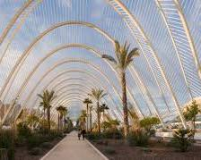
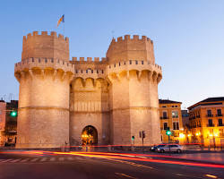
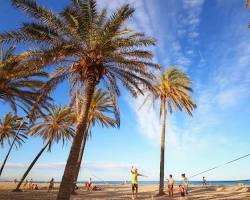

Регіон Валенсія, який ще називають «раєм на землі», знаходиться в південно-східній частині країни і є одним із найсонячніших регіонів Іспанії. На півночі регіон Валенсія межує з Каталоніяю, на півдні – з Мурсією, на заході – з Кастилією ла Манча та Арагоном, а на сході омивається Середземним морем.
Це, мабуть, найвідоміша визначна пам'ятка Валенсії. Створений архітектором Сантьяго Калатаюдом, цей футуристичний комплекс вражає своєю масштабністю та різноманітністю.
Прогулянка вузькими вуличками старого міста перенесе вас у часи середньовіччя.
Валенсія розташована на узбережжі Середземного моря, тому тут ви знайдете безліч прекрасних пляжів.
